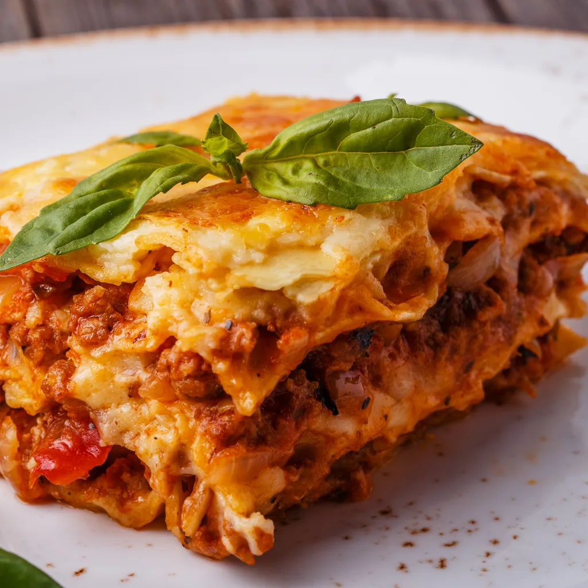

Lasagna Recipe (8 people)

Ingredients
- Lasagna noodles
- 300g ground beef
- 1l tomato sauce
- 1 clove of garlic
- 1 onion
- 300g Gruyère cheese
- Olive oil
- 70g butter
- 70g flour
- 50cl milk
- 1 tsp nutmeg
- Salt and pepper
Steps
- Preheat the oven to 210°C.
- Make the Bolognese sauce:
- In a skillet, brown the ground beef over medium heat. Drain excess fat.
- Add minced onion and garlic. Cook until softened.
- Add tomato sauce. Simmer for 15 minutes.
- Make the béchamel sauce:
- In a saucepan, melt butter and add flour. Cook for a minute, stirring constantly.
- Gradually add milk, whisking vigorously to avoid lumps, until the sauce thickens.
- Add nutmeg, salt, and pepper.
- In a baking dish, layer béchamel sauce, Bolognese sauce, and lasagna noodles.
- Top with a final layer of béchamel sauce, Bolognese sauce, and Gruyère cheese.
- Bake for 30-40 minutes until bubbly and golden brown.